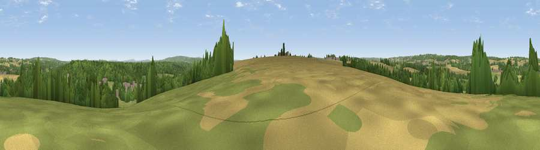

Viewpoint near Binsted
#32627 in England · top 31% of its area beats it · near Binsted · footpathWhere it is
The exact computed spot (SU 78625 41975). Click the marker for map links.
Public access: a public right of way passes within 14 m of this spot. Computed from Natural England's CRoW access layer and OpenStreetMap rights of way — not the legal definitive map. Always verify locally.
The view, rendered

A 360° render of this exact spot computed from the terrain model, tree cover and land cover — summer colours, afternoon light, calibrated against photographs of famous viewpoints. Real trees, hedges and buildings will differ in detail.
The panorama
Grey silhouette: terrain skyline in each direction (720 bearings, Earth curvature and refraction included). Dashed green: skyline with trees (+15 m) and buildings (+8 m) as obstacles. Blue strip: how far the ground is visible on each bearing.
Where the view opens
Wedge length = distance to the farthest visible ground on that bearing (vegetation-aware). Rings at 10, 25 and 50 km.
What fills the view
40% grassland · 36% woodland · 21% cropland · 3% built-up
Angular shares of the visible panorama (visual magnitude), not map area. Landscape diversity 0.51 (0–1 Shannon).
Key numbers
More beautiful places nearby
The staircase of upgrades: each row has a higher view potential than everything closer. Driving times are estimates from straight-line distance, calibrated against real road routing — check an actual route before setting out.
| Place | Direction | Drive | Score |
|---|---|---|---|
| Viewpoint near Bentley | NNW · 3 km | ~7 min | 38.7 |
| Viewpoint near East Worldham | SW · 6 km | ~13 min | 40.1 |
| Viewpoint near Holybourne | W · 6 km | ~13 min | 43.1 |
| Horsedown Common | NNW · 6 km | ~14 min | 54.8 |
| Noar Hill | SSW · 11 km | ~21 min | 59.8 |
| Temple of the Four Winds | ESE · 13 km | ~25 min | 65.4 |
| Viewpoint near Steep | SSW · 15 km | ~27 min | 68.7 |
| Viewpoint near Fernhurst | SE · 18 km | ~32 min | 75.1 |
51.17162, -0.87674 · source: screening · position refined by local search. Computed location — check access rights before visiting.